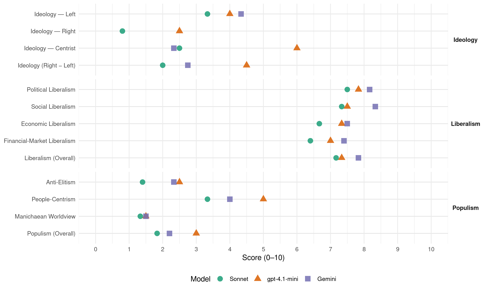

(Brazil, 1998)
manifesto_id 180310_199810
Get full text: This site shows derived annotations and short verbatim quotes only. The full manifesto text is © Manifesto Project / WZB — obtain it via manifesto-project.wzb.eu using the manifesto_id above.
Headline scores
| Dimension | Sonnet | gpt-4.1-mini | Gemini |
|---|---|---|---|
| Populism (Overall) | 1.8 | 3.0 | 2.2 |
| Anti-Elitism | 1.4 | 2.5 | 2.3 |
| People-Centrism | 3.3 | 5.0 | 4.0 |
| Manichaean Worldview | 1.3 | 1.5 | 1.5 |
| Ideology (Right − Left) | 2.0 | 4.5 | 2.8 |
| Liberalism (Overall) | 7.2 | 7.3 | 7.8 |
| Political Liberalism | 7.5 | 7.8 | 8.2 |
| Social Liberalism | 7.3 | 7.5 | 8.3 |
| Economic Liberalism | 6.7 | 7.3 | 7.5 |
| Financial-Market Liberalism | 6.4 | 7.0 | 7.4 |
Evidence per dimension
Economic Liberalism
Gemini · score 8.0 · verified · chunk 1
“privatização de empresas públicas e na concessão”
conseguiu avançar significativamente na privatização de empresas públicas e na concessão de serviços na área
Gemini · score 8.0 · verified · chunk 2
“participação da iniciativa privada”
crise fiscal do Estado tornou a participação da iniciativa privada indispensável à modernização dõ setor
Gemini · score 7.0 · verified · chunk 3
“competitividade das empresas”
é fator determinante da competitividade das empresas, da geração de empregos
Gemini · score 7.0 · verified · chunk 4
“cria concorrência no mercado”
requisitos de funcionamento das operadoras, cria concorrência no mercado, em condições mais favoráveis aos
Gemini · score 7.0 · verified · chunk 5
“Com a privatização prevista das hidrelétricas”
para geração de energia, irrigação e consumo humano e animal - por intermédio dos comitês de bacias hidrográficas. Com a privatização prevista das hidrelétricas instaladas nos grandes rios nacionais
Gemini · score 8.0 · verified · chunk 6
“estimular os agentes privados - incluindo as organizações não-governamentais sem fins lucrativos - a competir”
Gastar melhor os recursos públicos, nesse caso, significa também estimular os agentes privados - incluindo as organizações não-governamentais sem fins lucrativos - a competir entre si, a fim de que o dinheiro do
gpt-4.1-mini · score 8.0 · verified · chunk 1
“levando adiante o programa de privatização e fortalecendo o Estado no papel de regulador e indutor do desenvolvimento”
avançar na reorganização do setor público, completando as reformas estruturais necessárias para facilitar o controle do volume e a melhora da qualidade do gasto público, e garantir o equilíbrio a médio e longo prazo das contas da previdência; combater os déficits orçamentários nos três níveis de governo, detendo o crescimento da dívida pública em relação ao produto interno, aliviando a pressão do setor público sobre a poupança privada e abrindo espaço para a redução continuada dos juros; simplificar o sistema tributário e reduzir o peso dos impostos sobre a produção, o investimento e a exportação; aprofundar a reestruturação do setor produtivo, levando adiante o programa de privatização e fortalecendo o Estado no papel de regulador e indutor do desenvolvimento;
gpt-4.1-mini · score 8.0 · verified · chunk 2
“crédito de longo prazo para a reestruturação produtiva, modernização ou expansão da capacidade instalada”
… A reconversão produtiva, o aumento da competitividade dos produtos brasileiros, a expansão dos investimentos em infra-estrutura e o crescimento das exportações irão requerer do governo nos próximos quatro anos ações que assegurem: crédito de longo prazo para a reestruturação produtiva, modernização ou expansão da capacidade instalada; financiamento para a produção e comercialização de produtos exportados, bem como para a produção de insumos destinados a artigos exportáveis; financiamento de longo prazo para o fornecimento de bens destinados à ampliação e modernização da infra-estrutura. …
gpt-4.1-mini · score 7.0 · verified · chunk 3
“estimular a expansão das atividades empresariais em pesquisa e desenvolvimento”
Expansão dos investimentos em pesquisa e desenvolvimento elevar para dois por cento do PIB os dispêndios em ciência e tecnologia, com ampliação expressiva da parcela correspondente ao setor privado; recuperar e ampliar a capacidade de fomento do sistema nacional de ciência e tecnologia; promover a integração das agências federais de apoio ao desenvolvimento científico-tecnológico e de pesquisa entre si e com as secretarias e fundações estaduais de amparo à pesquisa; estimular a expansão das atividades empresariais em pesquisa e desenvolvimento e sua articulação com os órgãos federais e estaduais de apoio ao setor. Ao mesmo tempo, estimular a integração das i entidades de pesquisa - universidades, centros de pesquisa e laboratórios - com as empresas, sobretudo as micro, pequenas e médias.
gpt-4.1-mini · score 7.0 · verified · chunk 4
“É preciso continuar ampliando os gastos públicos com saúde, de forma compartilhada entre os três níveis de governo”
…gastos públicos com saúde têm aumentado nos últimos anos, chegando a R$ 28 bilhões em 1998. Apenas o Ministério da Saúde elevou seus dispêndios de R$ 13,7 bilhões em 1994, á preços médios de 1997, para R$ 19,5 bilhões em 1998. É preciso continuar ampliando os gastos públicos com saúde, de forma compartilhada entre os três níveis de governo. Além de multiplicar os recursos, é chegada a hora de fazer com que esses recursos produzam uma mudança radical nas condições de saúde do povo brasileiro. Insistir no objetivo da descentralização é essencial porque melhora a utilização dos recursos, permite identificar com mais precisão as necessidades do povo, reduz o desperdício, inibe a fraude, aproxima o cidadão dos responsáveis pela gestão e assim permite aumentar o controle social.
gpt-4.1-mini · score 7.0 · verified · chunk 5
“com a privatização prevista das hidrelétricas instaladas nos grandes rios nacionais”
… Isso permitirá estabelecer políticas eqüitativas de uso da água - para geração de energia, irrigação e consumo humano e animal - por intermédio dos comitês de bacias hidrográficas. Com a privatização prevista das hidrelétricas instaladas nos grandes rios nacionais, a regulamentação e a aplicação da Lei das Águas garantirão os direitos de todos os consumidores. implementação pelos estados de sistemas de gerenciamento de recursos hídricos, previstos nas respectivas leis estaduais.
gpt-4.1-mini · score 7.0 · verified · chunk 6
“realinhar os programas de crédito existentes, para apoiar o desenvolvimento”
…realinhar os programas de crédito existentes, para apoiar o desenvolvimento sustentado das atividades econômicas locais com potencial de geração de ocupação e renda, dando-se ênfase às formas associativas de produção e de consórcios de municípios…
Sonnet · score 7.0 · verified · chunk 1
“aprofundar a reestruturação do setor produtivo”
aprofundar a reestruturação do setor produtivo, levando adiante o programa de privatização e fortalecendo o Estado no papel de regulador e indutor do desenvolvimento
Sonnet · score 7.0 · verified · chunk 2
“estimular a reestruturação produtiva”
principal objetivo das medidas de apoio ao setor industrial adotadas a partir de 1995 foi estimular sua reestruturação produtiva, condição indispensável para enfrentar o aumento da competição no mercado interno
Sonnet · score 7.0 · verified · chunk 3
“competitividade das empresas, da geração de empregos”
A inovação - novos processos, produtos e serviços - é fator determinante da competitividade das empresas, da geração de empregos e do aumento das exportações.
Sonnet · score 6.0 · verified · chunk 4
“maior participação do setor privado”
ênfase à maior participação do setor privado nos investimentos em infra-estrutura, por meio de contratos de concessão para exploração de serviços
Sonnet · score 7.0 · verified · chunk 5
“Com a privatização prevista das hidrelétricas”
Com a privatização prevista das hidrelétricas instaladas nos grandes rios nacionais, a regulamentação e a aplicação da Lei das Águas garantirão os direitos de todos os consumidores.
Sonnet · score 6.0 · verified · chunk 6
“estimular os agentes privados”
Gastar melhor os recursos públicos, nesse caso, significa também estimular os agentes privados - incluindo as organizações não-governamentais
Financial-Market Liberalism
Gemini · score 8.0 · verified · chunk 1
“ajuste e o fortalecimento do sistema financeiro”
reestruturação foram o ajuste e o fortalecimento do sistema financeiro, de um lado, e a
Gemini · score 7.0 · verified · chunk 2
“facilitar o acesso dos interessados ao sistema bancário”
mediante aval e garantias, bem como facilitar o acesso dos interessados ao sistema bancário, ampliando para um milhão
Gemini · score 7.0 · verified · chunk 4
“crédito subsidiado, seja para a agricultura”
iniciativas de transferência de renda recursos de diversos programas que: concedem crédito subsidiado, seja para a agricultura familiar
Gemini · score 8.0 · verified · chunk 5
“viabilizou o mercado secundário de títulos imobiliários”
alienação fiduciária como garantia imobiliária e viabilizou o mercado secundário de títulos imobiliários; descentralização da seleção e contratação dos financiamentos
Gemini · score 7.0 · verified · chunk 6
“financiamento de projetos concretos de desenvolvimento local sustentado, por parte de agências multilaterais”
União, mediante a articulação do financiamento de projetos concretos de desenvolvimento local sustentado, por parte de agências multilaterais e organismos de cooperação internacional. O essencial é
gpt-4.1-mini · score 7.0 · verified · chunk 1
“saneamento do sistema bancário, o resgate da credibilidade e a nova projeção internacional do Brasil”
Os avanços alcançados pelo primeiro governo do presidente Fernando Henrique as reformas estruturais, as privatizações, o saneamento do sistema bancário, o resgate da credibilidade e a nova projeção internacional do Brasil, os investimentos em infra-estrutura, a recuperação da capacidade de atuação dos bancos federais, a melhoria na área educacional e de qualificação - prepararam a economia brasileira para uma nova arrancada de crescimento.
gpt-4.1-mini · score 6.0 · mixed · chunk 2
“expansão dos programas já mencionados de crédito produtivo popular, do Programa de Geração de Emprego e Renda - Proger”
… estímulo aos jovens empreendedores se concretizará com as seguintes ações. treinamento e qualificação profissional no âmbito do Plano Nacional de Qualificação Profissional - Planfor: serão estabelecidos cursos específicos que incorporem não apenas as habilidades requeridas para a produção de bens ou o fornecimento de serviços, mas gerenciamento de micro e pequenos negócios; concessão de crédito: expansão dos programas já mencionados de crédito produtivo popular, do Programa de Geração de Emprego e Renda - Proger, e do Programa de Apoio à Agricultura Familiar - Pronaf, para autônomos, micro e pequenos empreendedores, além de cooperativas e associações; estímulo às universidades para a promoção de “empresas- júnior”, formadas por alunos de várias áreas e cursos. …
gpt-4.1-mini · score 7.0 · verified · chunk 6
“revisão da Lei de Licitações, para o incremento da competição”
…simplificar rotinas e procedimentos, para a agilização das decisões, a transparência e o melhor atendimento ao cidadão; avançar na assimilação das novas tecnologias da informática…; reduzir os custos e melhorar a qualidade das compras e contratações de serviços, mediante a revisão da Lei de Licitações, para o incremento da competição entre os fornecedores e maior transparência nas licitações…
Sonnet · score 7.0 · verified · chunk 1
“normas rígidas de acesso a recursos e transparência de gestão”
ajustamento incluiu desde mudanças no controle acionário de instituições com problemas estruturais - preservados os interesses dos depositantes - até o estabelecimento de normas rígidas de acesso a recursos e transparência de gestão
Sonnet · score 7.0 · verified · chunk 2
“expansão dos mecanismos de garantia de crédito”
o apoio a esse tipo de empresa incluirá: a expansão dos mecanismos de garantia de crédito; a difusão de tecnologias; a ampliação das oportunidades de negócios, tendo em vista também o comércio exterior.
Sonnet · score 6.0 · verified · chunk 4
“cria concorrência no mercado”
Estabelece ainda os requisitos de funcionamento das operadoras, cria concorrência no mercado, em condições mais favoráveis aos usuários, e assegura o ressarcimento ao SUS
Sonnet · score 7.0 · verified · chunk 5
“mercado secundário de títulos imobiliários”
criação do Sistema Financeiro Imobiliário - SFI, que instituiu a alienação fiduciária como garantia imobiliária e viabilizou o mercado secundário de títulos imobiliários
Sonnet · score 5.0 · verified · chunk 6
“financiamento duplo, público e privado”
Devemos caminhar para um sistema de financiamento duplo, público e privado, o qual, entre outras coisas, permita a articulação dos interesses legítimos
Political Liberalism
Gemini · score 9.0 · verified · chunk 1
“imprensa diversificada, livre e combativa”
vida nacional. Temos uma imprensa diversificada, livre e combativa, O governo do presidente
Gemini · score 8.0 · verified · chunk 2
“instituir um sistema democrático”
tutela do Estado. Pretende-se instituir um sistema democrático que procure a solução das questões
Gemini · score 8.0 · verified · chunk 3
“consolidação da democracia”
Com a consolidação da democracia e a conquista da estabilidade, o Brasil se tornou mais confiante
Gemini · score 7.0 · verified · chunk 4
“garantia dos direitos dos cidadãos”
firmes compromissos com o avanço em matéria de garantia dos direitos dos cidadãos. Isso inclui a regulamentação
Gemini · score 8.0 · verified · chunk 5
“radicalizar a democracia”
O que se propõe é nada menos do que radicalizar a democracia. Não como outorga ou concessão de cima para
Gemini · score 9.0 · verified · chunk 6
“CONSOLIDAR E APROFUNDAR A DEMOCRACIA, PROMOVER OS DIREITOS HUMANOS”
novo mundo rural cujo advento ajuda a prefigurar o Brasil do século 21. OBJETIVO N – 4 CONSOLIDAR E APROFUNDAR A DEMOCRACIA, PROMOVER OS DIREITOS HUMANOS O êxito do Real demonstrou, para além de
gpt-4.1-mini · score 8.0 · verified · chunk 1
“Temos eleições regulares e livres para todos os níveis de governo, com elevada participação eleitoral”
O Brasil reencontrou o caminho da democracia depois de mais de duas décadas de autoritarismo. Hoje, temos eleições regulares e livres para todos os níveis de governo, com elevada participação eleitoral. Temos um número sem paralelo de organizações da sociedade civil com viva participação nos mais variados setores da vida nacional. Temos uma imprensa diversificada, livre e combativa.
gpt-4.1-mini · score 7.0 · verified · chunk 2
“a nova organização sindical deve oferecer alternativas de representação aos trabalhadores e empresários”
… Fortalecer os sindicatos; adotar o pluralismo sindical como forma de democratizar a representação dos trabalhadores e empresários; eliminar a contribuição compulsória e estabelecer o ritmo e a natureza da transição para um sistema de mais negociação e menor poder estatutário. A nova organização sindical deve oferecer alternativas de representação aos trabalhadores e empresários, aumentando a eficácia da ação do sindicato. …
gpt-4.1-mini · score 8.0 · verified · chunk 3
“consolidar a descentralização dos serviços e ações”
É preciso continuar ampliando os gastos públicos com saúde, de forma compartilhada entre os três níveis de governo. Além de multiplicar os recursos, é chegada a hora de fazer com que esses recursos produzam uma mudança radical nas condições de saúde do povo brasileiro. Insistir no objetivo da descentralização é essencial porque melhora a utilização dos recursos, permite identificar com mais precisão as necessidades do povo, reduz o desperdício, inibe a fraude, aproxima o cidadão dos responsáveis pela gestão e assim permite aumentar o controle social. Para tanto, o Piso de Atenção Básica foi uma iniciativa cuja importância é impossível subestimar. Cabe agora reexaminar as prioridades e formas de financiamento dos recursos destinados aos ambulatórios de especialidades; emergências; serviços de diagnósticos e tratamento; e internações hospitalares. Da mesma forma, é necessário reestudar o sistema de distribuição de recúrsos, de acordo com critérios que efetivamente atendam ao quadro epidemiológico das grandes necessidades de saúde da população, sobretudo de suas parcelas mais carentes. A partir dessa premissa, o governo já colocou em prática algumas medidas para resolver questões cruciais na prestação de serviços do SUS por meio de modificações significativas no seu financiamento, tais como: incentivo ao parto normal e a conseqüente redução no número de cesáreas, garantindo atendimento diferenciado para gestantes de alto risco e pagando o parto normal realizado por enfermeiros obstetras; garantia de recursos para incentivar a formação de Sistemas Estaduais de Referência Hospitalar no atendimento de urgência e de condições para o credenciamento dos hospitais nesses sistemas; incentivo ao credenciamento de hospitais em níveis diferenciados, que permitem melhor remuneração pelos serviços de terapia intensiva, considerando a capacitação, qualificação profissional e disponibilidade de equipamentos. Metas da política de financiamento e reestruturação do SUS aumentar gradativamente a disponibilidade financeira do Sistema Único de Saúde, de forma a superar o equivalente a quatro por cento do PIB na próxima década; habilitar os estados, o Distrito Federal e os municípios em um dos modelos de gestão descentralizada do Sistema de Saúde; garantir que os estados e municípios assumam integralmente a coordenação e a execução dos serviços de saúde; DESCENTRALIZAÇÃO DE AÇÕES E SERVIÇOS DE SAÚDE: 1998/2002 TIPO DE GESTÃOATUAL MUNICÍPIOS EM GESTÃO PLENA DE ATENÇÃO BÁSICA-B AP 4.554 MUNICÍPIOS EM GESTÃO PLENA DO SISTEMA MUNICIPAL 431 ESTADOS EM GESTÃO DO SISTEMA ESTADUAL1 assegurar a estabilidade de recursos federais que financiem as ações e serviços de saúde a serem executados de forma descentralizada; alterar o sistema de repasse de recursos a fim de que os municípios recebam diretamente do Fundo Nacional de Saúde os recursos para as ações e serviços básicos de saúde, com a implantação e consolidação do Piso de Atenção Básica em todo o país; definir uma nova política redistributiva de recursos para a saúde, orientada pela demanda, como instrumento de melhoria das condições sanitárias e de correção das injustiças sociais, dentro dos seguintes parâmetros: - organização dos serviços pelas prioridades de cobertura do quadro epidemiológico; - estabelecimento de uma relação mais harmônica entre o crescimento dos serviços de alta complexidade e a necessidade de forte investimento nas ações básicas de saúde; - definição clara dos papéis dos setores público e privado; - recuperação de custos na utilização do sistema público; - ganho de eficiência na aplicação dos recursos e nos resultados da melhoria das condições de saúde; - produção de serviços de saúde de grande impacto e controle social; - ampliação do enfoque de atendimento à demanda para abranger áreas da assistência e prevenção como: combate ao câncer do colo uterino, hemodiálise, transplantes, saúde ocular, entre várias outras. Melhoria da assistência O Sistema Único de Saúde continuará enfrentando o desafio de melhorar a qualidade da assistência. Problemas como a superlotação e as filas nos prontos-socorros dos grandes centros urbanos; a garantia do acesso aos serviços de média e alta complexidade; a espera prolongada para atendimento em ambulatórios especializados; a angustiante demora para os transplantes; a desumanização do atendimento, enfim, podem ser resolvidos com soluções criativas. Prova disso é que elas já vêm produzindo efeitos benéficos onde foram implantadas. Assistência de urgência e emergência Para melhorar o sistema de atendimento às emergências, é preciso trabalhar em duas áreas complementares: nos postos e centros de saúde, que precisam funcionar com horário ampliado de atendimento para resolver a maioria dos casos, evitando que as pessoas procurem os prontos-socorros era busca de um atendimento que deveria - e poderia - ter sido prestado no nível básico. Nesse aspecto, o avanço da descentralização, com extensão do PAB a todos os municípios, dará as condições para que os postos de saúde funcionem como devem; nos próprios serviços de emergência, onde são necessários recursos financeiros específicos, para infra-estrutura e equipamentos; implantação ou adequação de sistemas de transporte pré-hospitalar; e especialização profissional. Ações para a assistência de urgência implementar o Programa de Apoio aos Sistemas Estaduais de Referência Hospitalar para atendimento em urgência e emergência nos centros urbanos mais populosos; dar prioridade à aplicação de R$ 150 milhões em assistência pré-hospitalar; nas centrais de regulação; na recuperação e/ou atualização de equipamentos e área física; e em treinamento das respectivas equipes; aumentar em cinqüenta por cento os recursos para os hospitais ligados ao SUS que prestam serviços de emergência e que forem credenciados para compor o Sistema Estadual de Referência Hospitalar nessa área; avaliar semestralmente o desempenho dos hospitais integrantes do Programa, descredenciando os que não cumprirem as normas. Centrais de marcação de consultas, exames e organização das hospitalizações As centrais de marcação de consultas, exames e organização das hospitalizações, já em atividade em diversos municípios, têm promovido a racionalização do uso dos recursos e garantido, para a população, maior comodidade, ampliação do acesso aos serviços especializados de saúde, como as cirurgias oftalmológicas, neurológicas e cardíacas, além da melhoria da qualidade do atendimento, com diminuição das filas. As centrais significam também melhores condições de avaliação e controle dos serviços oferecidos e da utilização das instalações físicas. A partir das centrais, ampliam-se as condições para estudos de perfil da demanda e de tomada de decisões no sentido de oferecer serviços de acordo com as verdadeiras necessidades de saúde da população. Já funcionam 36 centrais em onze estados, com excelentes resultados. O Ministério da Saúde apoiará as iniciativas que estabeleçam mecanismos de regulação da oferta e demanda, com ênfase especial na implantação por parte dos estados e municípios de outras centrais, criando-se assim uma nova concepção de acesso aos serviços públicos de saúde. Ações para as centrais de marcação de consultas melhorar a qualidade da gestão hospitalar e, em especial, da assistência prestada aos pacientes; definir os indicadores de avaliação e fiscalização da qualidade do serviço assistencial prestado à população nos hospitais públicos e privados. Assistência especializada e de alta complexidade Existem áreas da assistência ambulatorial e hospitalar de média e alta complexidade que continuarão a receber atenção especial. É o caso dos serviços que assistem o portador de doença renal crônica com hemodiálise. Outro exemplo refere-se aos transplantes. A edição e regulamentação da Lei 9.434, conhecida como Lei dos Transplantes, permite que comece a funcionar a Central de Transplantes. Isso, por sua vez, possibilita ao Ministério da Saúde coordenar a lista única nacional de receptores. Outra área prioritária, que tem sido alvo de ações e
gpt-4.1-mini · score 7.0 · verified · chunk 4
“a participação da população em geral - e não apenas dos segmentos organizados da sociedade - será incentivada na definição de prioridades e no controle da utilização dos recursos públicos”
…capacitação de gestores e profissionais que trabalham na administração, controle e avaliação dos serviços de saúde. A participação da população em geral - e não apenas dos segmentos organizados da sociedade - será incentivada na definição de prioridades e no controle da utilização dos recursos públicos. O controle social é um dos pilares do SUS. Em um país com as dimensões e a diversidade do Brasil, as iniciativas que garantam a transparência e a moralidade no gasto dos recursos devem ser permanentes e estruturadas. Ações para as políticas de moralização e transparência na saúde consolidar o Disque Saúde - ligação gratuita - como canal direto de comunicação entre a sociedade e o Ministério da Saúde, para informações, sugestões, queixas e denúncias; incentivar a montagem de centrais idênticas nos estados e municípios de maior porte; ampliar a utilização da Internet para divulgar sistematicamente informações sobre repasse de recursos para estados e municípios; pagamento de hospitais e ambulatórios; licitações em andamento e seus resultados; preços obtidos na aquisição de medicamentos, equipamentos médico-hospitalares etc.; ampliar, na home page do Ministério da Saúde, a divulgação da execução orçamentária do órgão, incluindo valor da arrecadação e destinação dos recursos da CPMF; dar continuidade à ação do Sistema Nacional de Auditoria - SNA, especialmente nos sistemas estaduais e municipais de saúde; apoiar o desenvolvimento dos componentes estadual e municipal do SNA para que os órgãos específicos de acompanhamento, avaliação e controle trabalhem permanentemente junto a todos os prestadores de serviços; estimular a participação da sociedade nos conselhos de saúde visando à definição de prioridades e à fiscalização da correta aplicação dos recursos públicos.
gpt-4.1-mini · score 8.0 · verified · chunk 5
“fortalecer os conselhos de defesa dos grupos socialmente vulneráveis”
… promoveu a igualdade de oportunidades em favor dos segmentos discriminados da população, sempre em cooperação com eles mesmos; deu início a múltiplas parcerias nas áreas de educação, saúde, trabalho e meio ambiente. É hora de ampliar e aprofundar essa política. Isso significa um avanço ainda mais ambicioso. As propostas que lhe darão vida partem do princípio de que o Brasil está pronto para um novo salto - tão importante politicamente, no sentido pleno do termo, como tem sido o Real para a economia e para as condições de vida da população mais carente. O que se propõe é nada menos do que radicalizar a democracia. Não como outorga ou concessão de cima para baixo, mas como inadiável e duradouro empreendimento a muitas mãos. Em lugar da ilusão do Estado como único provedor do bem-estar, a radicalização da democracia abre as portas à participação coletiva na construção da sociedade do bem-estar. Se é verdadeiro que se formou no Brasil uma nova sociedade, é também verdadeiro que essa nova sociedade requer um novo Estado e uma nova democracia - até para que ela possa se expandir e tirar o melhor proveito de suas tremendas potencialidades. Agir consistentemente nesta direção, em permanente diálogo com a sociedade, é a meta das metas de um candidato que se elegeu em nome da mudança e agora aspira a se reeleger para aprofundar as grandes transformações desencadeadas nestes quatro anos. Para tanto, o presidente Fernando Henrique afirma seu compromisso com as seguintes diretrizes: levar adiante as inovações na área administrativa iniciadas no atual mandato; estimular a aprovação dos projetos de reforma política em pauta no Congresso Nacional; apoiar reformas do Judiciário e contribuir para aprimorar o funcionamento da justiça; implantar políticas de segurança pública de prevenção e combate ao crime, à violência urbana e ao tráfico de drogas, a fim de garantir a integridade física e os direitos da pessoa; promover a cidadania e os direitos humanos, notadamente das mulheres, idosos, negros, indígenas, jovens e demais grupos sujeitos a discriminação, bem como ampliar as medidas de defesa do consumidor, reforçar a autonomia sindical, a negociação coletiva e a concertação social; incentivar a participação, a solidariedade e o senso de responsabilidade social de todos os brasileiros, como componentes indissociáveis da vida civilizada.
gpt-4.1-mini · score 9.0 · verified · chunk 6
“fortalecer os conselhos de defesa dos grupos socialmente vulneráveis”
…fortaleceu os conselhos de defesa dos grupos socialmente vulneráveis; promoveu a igualdade de oportunidades em favor dos segmentos discriminados da população, sempre em cooperação com eles mesmos; deu início a múltiplas parcerias nas áreas de educação, saúde, trabalho e meio ambiente…
Sonnet · score 8.0 · verified · chunk 1
“eleições regulares e livres para todos”
Hoje, temos eleições regulares e livres para todos os níveis de governo, com elevada participação eleitoral
Sonnet · score 7.0 · verified · chunk 2
“adotar o pluralismo sindical como forma de democratizar”
fortalecer os sindicatos; adotar o pluralismo sindical como forma de democratizar a representação dos trabalhadores e empresários; eliminar a contribuição compulsória
Sonnet · score 7.0 · verified · chunk 3
“consolidação da democracia”
Com a consolidação da democracia e a conquista da estabilidade, o Brasil se tornou mais confiante na sua própria aptidão em projetar e construir a sociedade
Sonnet · score 7.0 · verified · chunk 4
“controle social é um dos pilares do SUS”
A participação da população em geral - e não apenas dos segmentos organizados da sociedade - será incentivada na definição de prioridades e no controle da utilização dos recursos públicos. O controle social é um dos pilares do SUS.
Sonnet · score 8.0 · verified · chunk 5
“Consolidar e Aprofundar a Democracia”
OBJETIVO N – 4 CONSOLIDAR E APROFUNDAR A DEMOCRACIA, PROMOVER OS DIREITOS HUMANOS
Sonnet · score 8.0 · verified · chunk 6
“CONSOLIDAR E APROFUNDAR A DEMOCRACIA”
OBJETIVO N – 4 CONSOLIDAR E APROFUNDAR A DEMOCRACIA, PROMOVER OS DIREITOS HUMANOS
Liberalism (Overall)
Gemini · score 8.0 · verified · chunk 1
“imprensa diversificada, livre e combativa”
vida nacional. Temos uma imprensa diversificada, livre e combativa, O governo do presidente
Gemini · score 8.0 · verified · chunk 2
“participação da iniciativa privada”
crise fiscal do Estado tornou a participação da iniciativa privada indispensável à modernização dõ setor
Gemini · score 8.0 · verified · chunk 3
“consolidação da democracia”
Com a consolidação da democracia e a conquista da estabilidade, o Brasil se tornou mais confiante
Gemini · score 7.0 · verified · chunk 4
“garantia dos direitos dos cidadãos”
firmes compromissos com o avanço em matéria de garantia dos direitos dos cidadãos. Isso inclui a regulamentação
Gemini · score 8.0 · verified · chunk 5
“radicalizar a democracia”
O que se propõe é nada menos do que radicalizar a democracia. Não como outorga ou concessão de cima para
Gemini · score 8.0 · verified · chunk 6
“CONSOLIDAR E APROFUNDAR A DEMOCRACIA, PROMOVER OS DIREITOS HUMANOS”
novo mundo rural cujo advento ajuda a prefigurar o Brasil do século 21. OBJETIVO N – 4 CONSOLIDAR E APROFUNDAR A DEMOCRACIA, PROMOVER OS DIREITOS HUMANOS O êxito do Real demonstrou, para além de
gpt-4.1-mini · score 8.0 · verified · chunk 1
“Temos eleições regulares e livres para todos os níveis de governo, com elevada participação eleitoral”
O Brasil reencontrou o caminho da democracia depois de mais de duas décadas de autoritarismo. Hoje, temos eleições regulares e livres para todos os níveis de governo, com elevada participação eleitoral. Temos um número sem paralelo de organizações da sociedade civil com viva participação nos mais variados setores da vida nacional. Temos uma imprensa diversificada, livre e combativa.
gpt-4.1-mini · score 7.0 · verified · chunk 2
“A nova organização sindical deve oferecer alternativas de representação aos trabalhadores e empresários”
… Fortalecer os sindicatos; adotar o pluralismo sindical como forma de democratizar a representação dos trabalhadores e empresários; eliminar a contribuição compulsória e estabelecer o ritmo e a natureza da transição para um sistema de mais negociação e menor poder estatutário. A nova organização sindical deve oferecer alternativas de representação aos trabalhadores e empresários, aumentando a eficácia da ação do sindicato. …
gpt-4.1-mini · score 7.0 · verified · chunk 3
“Expansão dos investimentos em pesquisa e desenvolvimento elevar para dois por cento do PIB”
Expansão dos investimentos em pesquisa e desenvolvimento elevar para dois por cento do PIB os dispêndios em ciência e tecnologia, com ampliação expressiva da parcela correspondente ao setor privado; recuperar e ampliar a capacidade de fomento do sistema nacional de ciência e tecnologia; promover a integração das agências federais de apoio ao desenvolvimento científico-tecnológico e de pesquisa entre si e com as secretarias e fundações estaduais de amparo à pesquisa; estimular a expansão das atividades empresariais em pesquisa e desenvolvimento e sua articulação com os órgãos federais e estaduais de apoio ao setor. Ao mesmo tempo, estimular a integração das i entidades de pesquisa - universidades, centros de pesquisa e laboratórios - com as empresas, sobretudo as micro, pequenas e médias.
gpt-4.1-mini · score 7.0 · verified · chunk 4
“A participação da população em geral - e não apenas dos segmentos organizados da sociedade - será incentivada na definição de prioridades e no controle da utilização dos recursos públicos”
…capacitação de gestores e profissionais que trabalham na administração, controle e avaliação dos serviços de saúde. A participação da população em geral - e não apenas dos segmentos organizados da sociedade - será incentivada na definição de prioridades e no controle da utilização dos recursos públicos. O controle social é um dos pilares do SUS. Em um país com as dimensões e a diversidade do Brasil, as iniciativas que garantam a transparência e a moralidade no gasto dos recursos devem ser permanentes e estruturadas. Ações para as políticas de moralização e transparência na saúde consolidar o Disque Saúde - ligação gratuita - como canal direto de comunicação entre a sociedade e o Ministério da Saúde, para informações, sugestões, queixas e denúncias; incentivar a montagem de centrais idênticas nos estados e municípios de maior porte; ampliar a utilização da Internet para divulgar sistematicamente informações sobre repasse de recursos para estados e municípios; pagamento de hospitais e ambulatórios; licitações em andamento e seus resultados; preços obtidos na aquisição de medicamentos, equipamentos médico-hospitalares etc.; ampliar, na home page do Ministério da Saúde, a divulgação da execução orçamentária do órgão, incluindo valor da arrecadação e destinação dos recursos da CPMF; dar continuidade à ação do Sistema Nacional de Auditoria - SNA, especialmente nos sistemas estaduais e municipais de saúde; apoiar o desenvolvimento dos componentes estadual e municipal do SNA para que os órgãos específicos de acompanhamento, avaliação e controle trabalhem permanentemente junto a todos os prestadores de serviços; estimular a participação da sociedade nos conselhos de saúde visando à definição de prioridades e à fiscalização da correta aplicação dos recursos públicos.
gpt-4.1-mini · score 7.0 · verified · chunk 5
“Com a privatização prevista das hidrelétricas instaladas nos grandes rios nacionais”
… Isso permitirá estabelecer políticas eqüitativas de uso da água - para geração de energia, irrigação e consumo humano e animal - por intermédio dos comitês de bacias hidrográficas. Com a privatização prevista das hidrelétricas instaladas nos grandes rios nacionais, a regulamentação e a aplicação da Lei das Águas garantirão os direitos de todos os consumidores. implementação pelos estados de sistemas de gerenciamento de recursos hídricos, previstos nas respectivas leis estaduais.
gpt-4.1-mini · score 8.0 · verified · chunk 6
“fortaleceu os conselhos de defesa dos grupos socialmente vulneráveis”
…fortaleceu os conselhos de defesa dos grupos socialmente vulneráveis; promoveu a igualdade de oportunidades em favor dos segmentos discriminados da população, sempre em cooperação com eles mesmos; deu início a múltiplas parcerias nas áreas de educação, saúde, trabalho e meio ambiente…
Sonnet · score 8.0 · verified · chunk 1
“democracia enquanto padrão de convivência civilizada”
reforça nosso compromisso com a democracia enquanto padrão de convivência civilizada. Democracia não apenas no plano formal das instituições
Sonnet · score 7.0 · verified · chunk 2
“ambiente favorável ao investimento privado, nacional e estrangeiro”
Graças ao Plano Real, foi possível construir um ambiente favorável ao investimento privado, nacional e estrangeiro, que além de ampliar a capacidade instalada para acompanhar o crescimento da demanda doméstica
Sonnet · score 7.0 · verified · chunk 3
“consolidação da democracia e a conquista da estabilidade”
Com a consolidação da democracia e a conquista da estabilidade, o Brasil se tornou mais confiante na sua própria aptidão
Sonnet · score 7.0 · verified · chunk 4
“maior participação do setor privado”
ênfase à maior participação do setor privado nos investimentos em infra-estrutura, por meio de contratos de concessão para exploração de serviços
Sonnet · score 7.0 · verified · chunk 5
“Consolidar e Aprofundar a Democracia”
OBJETIVO N – 4 CONSOLIDAR E APROFUNDAR A DEMOCRACIA, PROMOVER OS DIREITOS HUMANOS
Sonnet · score 7.0 · verified · chunk 6
“aperfeiçoar o funcionamento da justiça”
apoiar reformas do Judiciário e contribuir para aperfeiçoar o funcionamento da justiça; implantar políticas de segurança pública
Anti-Elitism
Gemini · score 3.0 · verified · chunk 1
“mazelas do elitismo, do mandonismo local”
representativas ainda são frágeis diante das mazelas do elitismo, do mandonismo local e do clientelismo
Gemini · score 3.0 · verified · chunk 5
“desaparecer o hábito secular de definir obras a partir de interesses particulares”
Dessa maneira, tenderá a desaparecer o hábito secular de definir obras a partir de interesses particulares, que só eventualmente coincidem com as aspirações
Gemini · score 1.0 · verified · chunk 6
“Estado historicamente voltado para si mesmo”
desperdício de tempo, dinheiro, energia e talento. Em suma, o Estado historicamente voltado para si mesmo cede a vez a um Estado cuja motivação primeira
gpt-4.1-mini · score 3.0 · verified · chunk 1
“Nossas instituições representativas ainda são frágeis diante das mazelas do elitismo”
Todos esses avanços não disfarçam, antes tomam mais visíveis os sintomas persistentes do nosso atraso político e da insegurança em que vivem nossos cidadãos. Nossas instituições representativas ainda são frágeis diante das mazelas do elitismo, do mandonismo local e do clientelismo, assim como do corporativismo exacerbado e da influência indevida dos grandes conglomerados econômicos.
gpt-4.1-mini · score 2.0 · verified · chunk 6
“o governo do presidente Fernando Henrique incentivou”
…o governo do presidente Fernando Henrique incentivou com atos, recursos e palavras, como nunca antes se fez em âmbito nacional, o desejo de participação, latente ou manifesto, de mulheres e homens, jovens e idosos, das mais diversas condições sociais. O govemo agiu assim movido pela convicção de que o fortalecimento da sociedade civil…
Sonnet · score 2.0 · verified · chunk 1
“influência indevida dos grandes conglomerados econômicos”
mazelas do elitismo, do mandonismo local e do clientelismo, assim como do corporativismo exacerbado e da influência indevida dos grandes conglomerados econômicos
Sonnet · score 1.0 · verified · chunk 2
“Falta cidadania e sobra Estado nas leis trabalhistas”
A legislação é escassa em relação aos direitos coletivos. Falta cidadania e sobra Estado nas leis trabalhistas brasileiras. Faltam atualmente mecanismos que estimulem o fortalecimento da organização sindical
Sonnet · score 1.0 · verified · chunk 3
“dívida social que o país acumulou”
A enorme dívida social que o país acumulou ao longo dos séculos pode e deve ser resgatada - agora.
Sonnet · score 2.0 · mixed · chunk 4
“combatendo a fraude, a corrupção, o desperdício”
dará continuidade e ampliará as ações de moralização do uso dos recursos públicos na área de saúde e dos serviços prestados à população, combatendo a fraude, a corrupção, o desperdício e a má-gestão.
Sonnet · score 2.0 · verified · chunk 5
“interesses particulares, que só eventualmente coincidem”
tenderá a desaparecer o hábito secular de definir obras a partir de interesses particulares, que só eventualmente coincidem com as aspirações das comunidades
Sonnet · score 1.0 · verified · chunk 6
“retórica de seus adversários”
ao contrário da retórica de seus adversários e mais até do que eles próprios - na singela e profunda lição
Ideology — Centrist
Gemini · score 3.0 · verified · chunk 1
“povo e governo - para enfrentar esse”
certeza de que estaremos preparados - povo e governo - para enfrentar esse novo e fascinante desafio.
Gemini · score 3.0 · verified · chunk 5
“engajamento da cidadania”
políticas públicas racionais e competentes - o engajamento da cidadania. Coerente com esse objetivo estratégico, o governo
Gemini · score 1.0 · verified · chunk 6
“participar das decisões de govemo, que se propaga por todos os grupos da população”
símbolo por excelência de uma mentalidade anti-autoritária e de uma disposição a participar das decisões de govemo, que se propaga por todos os grupos da população. Essa mentalidade, fruto de profundas transformações
gpt-4.1-mini · score 6.0 · verified · chunk 1
“Uma liderança acima de tudo democrática, com coragem para mudar e humildade para saber”
Para tanto, haveremos de contar, como contamos nestes quatro anos, com a condução de uma liderança firme, com profundo conhecimento do Brasil e do mundo, a força da convicção no rumo a seguir, a experiência, o equilíbrio e a capacidade de diálogo para manter o país unido nesta grande travessia. Uma liderança acima de tudo democrática, com coragem para mudar e humildade para saber que, numa sociedade tão complexa, com interesses tão diversificados como a brasileira, as mudanças necessárias, ou virão pela via do diálogo, da persuasão, da negociação e do entendimento, ou desaguarão no impasse paralisador.
gpt-4.1-mini · score 6.0 · verified · chunk 6
“parceria, cidadania e democracia hão de ser consagradas”
…Parceria, cidadania e democracia hão de ser consagradas principalmente na vida diária. Áspero e difícil é o cotidiano dos milhões dos brasileiros que vivem aglomerados nas regiões metropolitanas e grandes cidades…
Sonnet · score 3.0 · verified · chunk 1
“ampla aliança que a apóia”
Para nós, da ampla aliança que a apóia, a certeza de que estaremos preparados - povo e governo - para enfrentar esse novo e fascinante desafio
Sonnet · score 2.0 · verified · chunk 2
“geração de empregos e renda”
Proger consolidou-se, em 1997, como um dos principais instrumentos de concessão de crédito aos micro e pequenos empreendedores urbanos e rurais, bem como às suas associações e aos trabalhadores autônomos
Sonnet · score 2.0 · verified · chunk 3
“Estado e sociedade”
Vencer a fome e a miséria é tarefa de todos - Estado e sociedade. Mas a parte que cabe ao poder público, federal, estadual e municipal é intransferível.
Sonnet · score 3.0 · verified · chunk 4
“controle social é um dos pilares do SUS”
A participação da população em geral - e não apenas dos segmentos organizados da sociedade - será incentivada na definição de prioridades e no controle da utilização dos recursos públicos. O controle social é um dos pilares do SUS.
Sonnet · score 2.0 · verified · chunk 5
“nem Estado mínimo, nem Estado máximo”
obedece a três mandamentos irredutíveis: nem Estado mínimo, nem Estado máximo: Estado necessário para cuidar de tudo aquilo que não pode nem deve delegar
Sonnet · score 3.0 · verified · chunk 6
“nem Estado mínimo, nem Estado máximo”
obedece a três mandamentos irredutíveis: nem Estado mínimo, nem Estado máximo: Estado necessário para cuidar de tudo
Ideology — Left
Gemini · score 4.0 · verified · chunk 1
“inclusão dos excluídos”
geral da mudança - o grande objetivo com o qual os demais se alinham - é a inclusão dos excluídos.
Gemini · score 5.0 · verified · chunk 3
“eliminar a fome, combater a pobreza e a exclusão social”
OBJETIVO N - 3 ELIMINAR A FOME, COMBATER A POBREZA E A EXCLUSÃO SOCIAL, MELHORAR A DISTRIBUIÇÃO DE RENDA
Gemini · score 4.0 · verified · chunk 5
“combater a pobreza, à desigualdade, à doença”
ritmo e na abrangência que a indignação nacional reclama, o combate à pobreza, à desigualdade, à doença, em. suma, ao atraso em todas
gpt-4.1-mini · score 5.0 · verified · chunk 1
“romper com o clientelismo e o fisiologismo”
Mobilizou a sociedade e instituiu uma nova forma de política assistencial, rompendo com o clientelismo e o fisiologismo. Ainda assim, a dívida social brasileira continua imensa e moralmente inaceitável.
gpt-4.1-mini · score 3.0 · verified · chunk 6
“combate à pobreza, à desigualdade, à doença”
…o combate à pobreza, à desigualdade, à doença, em. suma, ao atraso em todas as suas manifestações, exige - além da presença de um Estado ágil e forte, capaz de conceber, implementar e financiar políticas públicas racionais e competentes - o engajamento da cidadania…
Sonnet · score 4.0 · verified · chunk 1
“melhorar a distribuição de renda”
ELIMINAR A FOME, COMBATER A POBREZA E A EXCLUSÃO SOCIAL, MELHORAR A DISTRIBUIÇÃO DE RENDA
Sonnet · score 3.0 · verified · chunk 2
“apoio à agricultura familiar e aos assentados”
Além de crédito e assistência técnica, haverá: apoio à agricultura familiar e aos assentados; implantação de serviços de infra-estrutura, como estradas vicinais, água, energia elétrica
Sonnet · score 3.0 · verified · chunk 3
“melhorar a distribuição de renda”
ELIMINAR A FOME, COMBATER A POBREZA E A EXCLUSÃO SOCIAL, MELHORAR A DISTRIBUIÇÃO DE RENDA
Sonnet · score 4.0 · verified · chunk 4
“erradicar a desnutrição em crianças menores”
erradicar a desnutrição em crianças menores de dois anos, por meio da universalização de programas de alimentação associados a ações básicas de saúde
Sonnet · score 3.0 · verified · chunk 5
“erradicar a miséria, combater a pobreza”
a meta seja a mesma: erradicar a miséria, combater a pobreza, assegurar as condições necessárias para a pequena produção sustentável
Sonnet · score 3.0 · verified · chunk 6
“combate à pobreza, à desigualdade”
o combate à pobreza, à desigualdade, à doença, em suma, ao atraso em todas as suas manifestações
Ideology (Right − Left)
Gemini · score 3.0 · verified · chunk 1
“inclusão dos excluídos”
geral da mudança - o grande objetivo com o qual os demais se alinham - é a inclusão dos excluídos.
Gemini · score 4.0 · verified · chunk 3
“eliminar a fome, combater a pobreza e a exclusão social”
OBJETIVO N - 3 ELIMINAR A FOME, COMBATER A POBREZA E A EXCLUSÃO SOCIAL, MELHORAR A DISTRIBUIÇÃO DE RENDA
Gemini · score 3.0 · verified · chunk 5
“combater a pobreza, à desigualdade, à doença”
ritmo e na abrangência que a indignação nacional reclama, o combate à pobreza, à desigualdade, à doença, em. suma, ao atraso em todas
Gemini · score 1.0 · verified · chunk 6
“participar das decisões de govemo, que se propaga por todos os grupos da população”
símbolo por excelência de uma mentalidade anti-autoritária e de uma disposição a participar das decisões de govemo, que se propaga por todos os grupos da população. Essa mentalidade, fruto de profundas transformações
gpt-4.1-mini · score 5.0 · verified · chunk 1
“Uma liderança acima de tudo democrática, com coragem para mudar e humildade para saber”
Para tanto, haveremos de contar, como contamos nestes quatro anos, com a condução de uma liderança firme, com profundo conhecimento do Brasil e do mundo, a força da convicção no rumo a seguir, a experiência, o equilíbrio e a capacidade de diálogo para manter o país unido nesta grande travessia. Uma liderança acima de tudo democrática, com coragem para mudar e humildade para saber que, numa sociedade tão complexa, com interesses tão diversificados como a brasileira, as mudanças necessárias, ou virão pela via do diálogo, da persuasão, da negociação e do entendimento, ou desaguarão no impasse paralisador.
gpt-4.1-mini · score 4.0 · verified · chunk 6
“parceria, cidadania e democracia hão de ser consagradas”
…Parceria, cidadania e democracia hão de ser consagradas principalmente na vida diária. Áspero e difícil é o cotidiano dos milhões dos brasileiros que vivem aglomerados nas regiões metropolitanas e grandes cidades…
Sonnet · score 2.0 · verified · chunk 1
“progresso material e progresso social”
Em uma palavra, simultaneamente, progresso material e progresso social
Sonnet · score 2.0 · verified · chunk 2
“Falta cidadania e sobra Estado nas leis trabalhistas”
A legislação é escassa em relação aos direitos coletivos. Falta cidadania e sobra Estado nas leis trabalhistas brasileiras.
Sonnet · score 2.0 · verified · chunk 3
“redistribuição de renda”
modernizar os serviços sociais básicos, de modo que alcancem toda a população, melhorando sua eficiência e aumentando o seu impacto como fator de qualidade de vida e redistribuição de renda
Sonnet · score 2.0 · verified · chunk 4
“combatendo a fraude, a corrupção, o desperdício”
dará continuidade e ampliará as ações de moralização do uso dos recursos públicos na área de saúde e dos serviços prestados à população, combatendo a fraude, a corrupção, o desperdício e a má-gestão.
Sonnet · score 2.0 · verified · chunk 5
“nem Estado mínimo, nem Estado máximo”
obedece a três mandamentos irredutíveis: nem Estado mínimo, nem Estado máximo: Estado necessário para cuidar de tudo aquilo que não pode nem deve delegar
Sonnet · score 2.0 · verified · chunk 6
“novo pacto entre Estado e Sociedade”
o desenvolvimento econômico, social e político do país passa inevitavelmente por um novo pacto entre Estado e Sociedade
Ideology — Right
gpt-4.1-mini · score 3.0 · verified · chunk 1
“combater o protecionismo comercial”
O governo continuará a desenvolver formas eficazes de diálogo político com as principais lideranças européias. Estudaremos com atenção as novas formas de gestão social experimentadas por alguns governos europeus e participaremos de maneira construtiva de discussões sobre o seu aperfeiçoamento. O governo atuará com ênfase para reverter as situações de clamoroso desequilíbrio na área do comércio internacional, como a manutenção de subsídios agrícolas, e abrir espaço aos países em desenvolvimento nas novas arenas de negociação, combatendo o protecionismo comercial.
gpt-4.1-mini · score 2.0 · verified · chunk 6
“intensificando a vigilância e ajudando, nas fronteiras mais remotas”
…intensificando a vigilância e ajudando, nas fronteiras mais remotas, a integrar a população civil à cidadania e, por extensão, à defesa nacional. O Projeto Sipam/Sivam, de excepcional interesse regional e nacional, constitui ação concreta para consolidar a soberania brasileira no espaço territorial amazônico…
Sonnet · score 1.0 · verified · chunk 1
“integração soberana do Brasil”
O desafio da integração soberana do Brasil nessa nova era requer idéias igualmente novas
Sonnet · score 1.0 · verified · chunk 2
“defender intransigentemente os interesses do país”
defender intransigentemente os interesses do país, trabalhando pela remoção de barreiras externas às exportações brasileiras em todos os foros e negociações bilaterais, regionais ou multilaterais
Sonnet · score 0.0 · verified · chunk 3
“cooperação internacional em ciência e tecnologia”
promover e expandir a cooperação internacional em ciência e tecnologia nas áreas básicas e de aplicações tecnológicas
Sonnet · score 1.0 · verified · chunk 5
“integração econômica nacional”
acreditar em uma política de integração econômica nacional e de desenvolvimento macrorregional equilibrado, com estímulos especiais para a localização de novos empreendimentos no Nordeste
Sonnet · score 1.0 · verified · chunk 6
“vigilância das fronteiras”
dando prioridade à manutenção de forças versáteis para pronto-emprego e de núcleos de modernidade, à vigilância das fronteiras
Manichaean Worldview
Gemini · score 2.0 · verified · chunk 1
“apelos da demagogia fácil, das promessas”
lutar para fazer desse sonho uma realidade. Sem ceder aos apelos da demagogia fácil, das promessas irresponsáveis
Gemini · score 1.0 · verified · chunk 5
“irresponsabilidade administrativa que o governo do presidente Fernando Henrique repele”
deixavam de funcionar, por falta de manutenção, é uma irresponsabilidade administrativa que o governo do presidente Fernando Henrique repele e continuará a repelir.
gpt-4.1-mini · score 2.0 · verified · chunk 1
“O contraste entre a ostentação de riqueza e a pobreza absoluta envenena a coesão da sociedade”
A miséria e a fome são enfermidades que precisam ser banidas de nosso país. O contraste entre a ostentação de riqueza e a pobreza absoluta envenena a coesão da sociedade. A indignação com esse estado de coisas cresce na mesma medida da confiança do Brasil em suas próprias forças.
gpt-4.1-mini · score 1.0 · verified · chunk 6
“banditismo ligado à droga, em síntese, constitui séria ameaça”
…O banditismo ligado à droga, em síntese, constitui séria ameaça à sociedade e aos valores inerentes à ordem democrática. Para se contrapor a essas atividades criminosas, o presidente Fernando Henrique consolidará o alcance e a abrangência da Secretaria Nacional Aníidrogas…
Sonnet · score 2.0 · verified · chunk 1
“guerra sem quartel contra a exclusão”
só nos estimula e aumenta a determinação de continuar travando uma guerra sem quartel contra a exclusão
Sonnet · score 1.0 · verified · chunk 2
“herdadas de um Estado paternalista e autoritário”
Além disso, herdadas de um Estado paternalista e autoritário, as leis cerceiam os direitos coletivos de trabalhadores e empresários, na tarefa de encontrar solução para seus conflitos
Sonnet · score 1.0 · verified · chunk 3
“combatendo sem trégua a miséria”
aprofundar o esforço desencadeado nestes quatro anos de governo em mobilizar recursos, vontade, energia, competência e imaginação para melhorar as condições de vida do povo mais pobre, eliminando a fome e combatendo sem trégua a miséria
Sonnet · score 1.0 · verified · chunk 4
“crime de falsificação de medicamentos”
O crime de falsificação de medicamentos agora tem punição equivalente à dos crimes hediondos, ou seja, é inafiançável, seus autores não podem ser anistiados
Sonnet · score 1.0 · verified · chunk 5
“por desconhecimento ou má-fé”
muito ao contrário do que alguns propagam, por desconhecimento ou má-fé -, União, estados e municípios terão também de apresentar padrões de desempenho
Sonnet · score 2.0 · verified · chunk 6
“rupturas aventureiras ou saltos no escuro”
E não como rupturas aventureiras ou saltos no escuro, os quais, tenham o nome que lhes queiram dar seus desavisados proponentes
People-Centrism
Gemini · score 4.0 · verified · chunk 1
“valor do nosso povo, combativo, alegre”
democracia e, sobretudo, do valor do nosso povo, combativo, alegre, tolerante e trabalhador.
Gemini · score 6.0 · verified · chunk 3
“melhorar as condições de vida do povo mais pobre”
mobilizar recursos, vontade, energia, competência e imaginação para melhorar as condições de vida do povo mais pobre, eliminando a fome
Gemini · score 3.0 · verified · chunk 4
“necessidades de saúde da população”
critérios que efetivamente atendam ao quadro epidemiológico das grandes necessidades de saúde da população, sobretudo de suas parcelas
Gemini · score 4.0 · verified · chunk 5
“coincidem com as aspirações das comunidades”
de definir obras a partir de interesses particulares, que só eventualmente coincidem com as aspirações das comunidades; construção de novas obras apenas quando
Gemini · score 3.0 · verified · chunk 6
“participar das decisões de govemo, que se propaga por todos os grupos da população”
símbolo por excelência de uma mentalidade anti-autoritária e de uma disposição a participar das decisões de govemo, que se propaga por todos os grupos da população. Essa mentalidade, fruto de profundas transformações
gpt-4.1-mini · score 7.0 · verified · chunk 1
“Contamos, nesse percurso, com o capital de nossos enormes recursos naturais, da diversidade dá nossa cultura, do vigor da nossa sociedade civil, da força da nossa jovem democracia e, sobretudo, do valor do nosso povo”
Grande, não como potência com pretensões hegemônicas - que não temos -, mas como exemplo de sociedade pluralista democrática, socialmente mais justa e mais igualitária. Contamos, nesse percurso, com o capital de nossos enormes recursos naturais, da diversidade dá nossa cultura, do vigor da nossa sociedade civil, da força da nossa jovem democracia e, sobretudo, do valor do nosso povo, combativo, alegre, tolerante e trabalhador.
gpt-4.1-mini · score 3.0 · verified · chunk 6
“a participação coletiva na construção da sociedade do bem-estar”
…a radicalização da democracia abre as portas à participação coletiva na construção da sociedade do bem-estar. Se é verdadeiro que se formou no Brasil uma nova sociedade, é também verdadeiro que essa nova sociedade requer um novo Estado e uma nova democracia…
Sonnet · score 4.0 · verified · chunk 1
“governo e povo, de compartilhar o sonho”
devemos ser capazes, governo e povo, de compartilhar o sonho de uma nova sociedade, e de juntos lutar para fazer desse sonho uma realidade
Sonnet · score 2.0 · verified · chunk 2
“melhorar a qualidade de vida de suas populações”
atende não apenas aos objetivos de revitalizar as grandes cidades e melhorar a qualidade de vida de suas populações. E, em si, um forte estímulo à abertura de postos de trabalho.
Sonnet · score 3.0 · verified · chunk 3
“melhorar as condições de vida do povo mais pobre”
mobilizar recursos, vontade, energia, competência e imaginação para melhorar as condições de vida do povo mais pobre, eliminando a fome
Sonnet · score 4.0 · verified · chunk 4
“necessidades do povo, reduz o desperdício”
permite identificar com mais precisão as necessidades do povo, reduz o desperdício, inibe a fraude, aproxima o cidadão dos responsáveis pela gestão
Sonnet · score 3.0 · verified · chunk 5
“radicalizar a democracia”
O que se propõe é nada menos do que radicalizar a democracia. Não como outorga ou concessão de cima para baixo, mas como inadiável e duradouro empreendimento a muitas mãos.
Sonnet · score 4.0 · verified · chunk 6
“a extraordinária confiança dos brasileiros em seu futuro”
o contagiam, desde a primeira hora, a extraordinária confiança dos brasileiros em seu futuro, a garra e a alegria
Populism (Overall)
Gemini · score 3.0 · verified · chunk 1
“mazelas do elitismo, do mandonismo local”
representativas ainda são frágeis diante das mazelas do elitismo, do mandonismo local e do clientelismo
Gemini · score 3.0 · verified · chunk 3
“melhorar as condições de vida do povo mais pobre”
mobilizar recursos, vontade, energia, competência e imaginação para melhorar as condições de vida do povo mais pobre, eliminando a fome
Gemini · score 1.0 · verified · chunk 4
“necessidades de saúde da população”
critérios que efetivamente atendam ao quadro epidemiológico das grandes necessidades de saúde da população, sobretudo de suas parcelas
Gemini · score 3.0 · verified · chunk 5
“desaparecer o hábito secular de definir obras a partir de interesses particulares”
Dessa maneira, tenderá a desaparecer o hábito secular de definir obras a partir de interesses particulares, que só eventualmente coincidem com as aspirações
Gemini · score 1.0 · verified · chunk 6
“Estado historicamente voltado para si mesmo”
desperdício de tempo, dinheiro, energia e talento. Em suma, o Estado historicamente voltado para si mesmo cede a vez a um Estado cuja motivação primeira
gpt-4.1-mini · score 4.0 · verified · chunk 1
“Nossas instituições representativas ainda são frágeis diante das mazelas do elitismo”
Todos esses avanços não disfarçam, antes tomam mais visíveis os sintomas persistentes do nosso atraso político e da insegurança em que vivem nossos cidadãos. Nossas instituições representativas ainda são frágeis diante das mazelas do elitismo, do mandonismo local e do clientelismo, assim como do corporativismo exacerbado e da influência indevida dos grandes conglomerados econômicos.
gpt-4.1-mini · score 2.0 · verified · chunk 6
“o governo do presidente Fernando Henrique incentivou”
…o governo do presidente Fernando Henrique incentivou com atos, recursos e palavras, como nunca antes se fez em âmbito nacional, o desejo de participação, latente ou manifesto, de mulheres e homens, jovens e idosos, das mais diversas condições sociais…
Sonnet · score 2.0 · verified · chunk 1
“Sem ceder aos apelos da demagogia fácil”
Sem ceder aos apelos da demagogia fácil, das promessas irresponsáveis, mas com horizontes claros, propósitos firmes, perseverança e continuidade
Sonnet · score 1.0 · verified · chunk 2
“Falta cidadania e sobra Estado nas leis trabalhistas”
A legislação é escassa em relação aos direitos coletivos. Falta cidadania e sobra Estado nas leis trabalhistas brasileiras.
Sonnet · score 2.0 · verified · chunk 3
“eliminar a fome, combater a pobreza”
OBJETIVO N - 3 ELIMINAR A FOME, COMBATER A POBREZA E A EXCLUSÃO SOCIAL, MELHORAR A DISTRIBUIÇÃO DE RENDA
Sonnet · score 2.0 · verified · chunk 4
“combatendo a fraude, a corrupção, o desperdício”
dará continuidade e ampliará as ações de moralização do uso dos recursos públicos na área de saúde e dos serviços prestados à população, combatendo a fraude, a corrupção, o desperdício e a má-gestão.
Sonnet · score 2.0 · verified · chunk 5
“interesses particulares, que só eventualmente coincidem”
tenderá a desaparecer o hábito secular de definir obras a partir de interesses particulares, que só eventualmente coincidem com as aspirações das comunidades
Sonnet · score 2.0 · verified · chunk 6
“radicalizar a democracia”
O que se propõe é nada menos do que radicalizar a democracia. Não como outorga ou concessão de cima para baixo
Social Liberalism